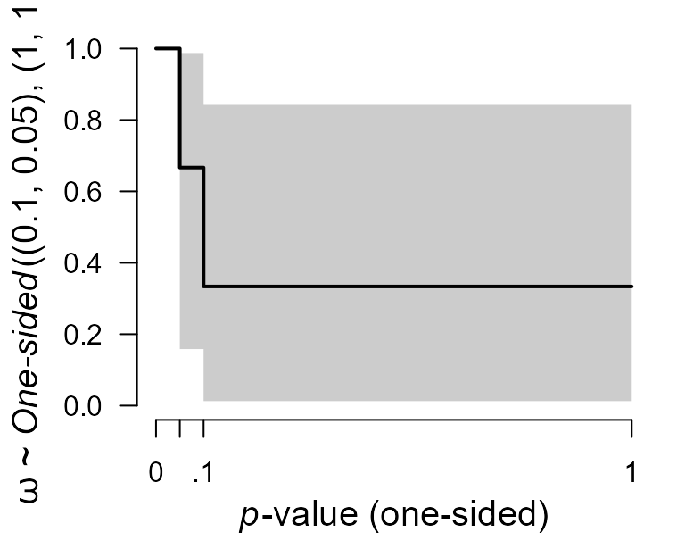
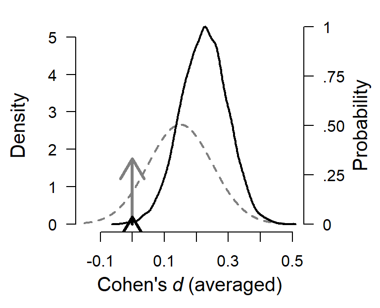
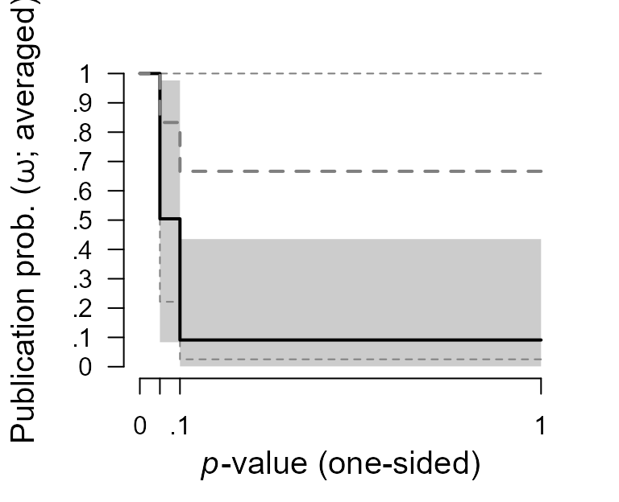

vignettes/CustomEnsembles.Rmd
CustomEnsembles.RmdBy default, the RoBMA() function specifies models as a combination of all supplied prior distributions (across null and alternative specification), with their prior model odds being equal to the product of prior distributions’ prior odds. This results in the 12 meta-analytic models using the default settings or can be utilized for reproducing Bayesian Model-Averaged Meta-Analysis (BMA) (Gronau et al., 2017) as shown in another vignette. However, the package was built in a way that it can be used as a framework for estimating highly customized model ensembles. Here, we are going to illustrate how to do exactly that.
Please keep in mind that all models should be justified by theory. Furthermore, the models should be tested to make sure that it can perform as intended, a priori to drawing inference from it. The following sections are only illustrating the functionality of the package.
To illustrate the custom model building procedure, we use data from the infamous Bem (2011) “Feeling the future” paper. We use a coding of the results as presented by the original author (Bem et al., 2011). According to the original papers, participants showed statistically significant signs of precognition (predicting the future) in 8/9 experiments. However, there are many issues with the paper (Rouder & Morey, 2011; Schimmack, 2018; Wagenmakers et al., 2011), which are not important for this vignette.
Bem2011 <- data.frame( study = c( "1", "2", "3", "4", "5", "6", "7", "8", "9"), t = c(2.51, 2.39, 2.55, 2.03, 2.23, 2.41, 1.31, 1.92, 2.96), N = c( 100, 150, 97, 99, 100, 150, 200, 100, 50) )
Consider the following scenarios as plaussible explanations for the data, and include those into the meta-analytic ensemble:
If we were to fit the ensemble using the RoBMA() function and specifying all of the priors, we would have ended with two more models than requested (the random effects model assuming the effect size to be zero (\(H_{0}^{\overline{\omega}r}\)) and the random effects model assuming the effect size to be zero and publication bias (\(H_{0}^{{\omega}r}\))). Furthermore, we could not specify different parameters for the prior distributions for each model, which the following process allows (but we do not utilize it).
We start with fitting only the first model using the RoBMA() function and we will continuously update the fitted object to include all of the models. We explicitly specify prior distributions for all parameters using the prior() function and we set the priors to be treated as the null priors for all parameters. We also add silent = TRUE to the control argument (to suppress the fitting messages) and set seed to ensure reproducibility of the results.
library(RoBMA) #> Loading required namespace: runjags #> module RoBMA loaded fit <- RoBMA(t = Bem2011$t, n = Bem2011$N, study_names = Bem2011$study, priors_mu = NULL, priors_tau = NULL, priors_omega = NULL, priors_mu_null = prior("spike", parameters = list(location = 0)), priors_tau_null = prior("spike", parameters = list(location = 0)), priors_omega_null = prior("spike", parameters = list(location = 1)), control = list(silent = TRUE), seed = 666)
Before we add the second model to the ensemble, we need to decide on the prior distribution for the mean parameter. If precognition were to exist, the effect would be small since all casinos would be bankrupted otherwise. Also, negative precognition does not make a lot of sense. Therefore, we decide to use a normal distribution with mean = .15 and standard deviation 0.10, setting most of the probability around the small effect sizes. To get a better grasp of the prior distribution, we visualize it using the plot.prior() function (the figure can be created using the ggplot2 package by adding plot_type == "ggplot" argument).
We add the second model to the ensemble using the update.RoBMA() function. The function can also be used to many other purposes - updating settings, prior model probabilities, and refitting failed models. Here, we supply the fitted ensemble object and add an argument specifying the prior distribution of each parameter for the additional model. Since we want to add model 2 - we set the prior for the mu parameter to be treated as an alternative prior and the remaining priors treated as null priors. If we wanted, we could also specify prior_odds argument, to change the prior probability of the fitted model but we do not utilize this option here to keep the default value, which sets the prior odds for the new model to 1. (Note that the arguments for specifying prior distributions in update.RoBMA() function are prior_X - in singular, in comparison to RoBMA() function that uses priors_X in plural.)
fit <- update(fit, prior_mu = prior("normal", parameters = list(mean = .15, sd = .10)), prior_tau_null = prior("spike", parameters = list(location = 0)), prior_omega_null = prior("spike", parameters = list(location = 1)))
We can inspect the updated ensemble to verify that it contains both models by adding type = "models" argument to the summary.RoBMA() function. We can also inspect the individual model estimates by changing the type argument to type = "individual".
summary(fit, type = "models") #> Call: #> RoBMA(t = Bem2011$t, n = Bem2011$N, study_names = Bem2011$study, #> priors_mu = NULL, priors_tau = NULL, priors_omega = NULL, #> priors_mu_null = prior("spike", parameters = list(location = 0)), #> priors_tau_null = prior("spike", parameters = list(location = 0)), #> priors_omega_null = prior("spike", parameters = list(location = 1)), #> control = list(silent = TRUE), seed = 666) #> #> Robust Bayesian Meta-Analysis #> Prior mu Prior tau Prior omega Prior prob. Post. prob. #> 1 Spike(0) Spike(0) Spike(1) 0.500 0.000 #> 2 Normal(0.15, 0.1)[-Inf, Inf] Spike(0) Spike(1) 0.500 1.000 #> log(MargLik) Incl. BF #> 1 -31.527 0.000 #> 2 -13.904 45047827.466 summary(fit, type = "individual") #> Call: #> RoBMA(t = Bem2011$t, n = Bem2011$N, study_names = Bem2011$study, #> priors_mu = NULL, priors_tau = NULL, priors_omega = NULL, #> priors_mu_null = prior("spike", parameters = list(location = 0)), #> priors_tau_null = prior("spike", parameters = list(location = 0)), #> priors_omega_null = prior("spike", parameters = list(location = 1)), #> control = list(silent = TRUE), seed = 666) #> #> Individual Models Summary #> #> Model: 1 #> Prior prob.: 0.500 Prior mu: Spike(0) #> log(MargLik): -31.527 Prior tau: Spike(0) #> Post. prob.: 0.000 Prior omega: Spike(1) #> Incl. BF: 0.000 #> #> Model Coefficients: #> NULL #> #> #> Model: 2 #> Prior prob.: 0.500 Prior mu: Normal(0.15, 0.1)[-Inf, Inf] #> log(MargLik): -13.904 Prior tau: Spike(0) #> Post. prob.: 1.000 Prior omega: Spike(1) #> Incl. BF: 45047827.466 #> #> Model Coefficients: #> Mean SD .025 Median .975 MCMC error Error % of SD ESS Rhat #> mu 0.330 0.053 0.226 0.330 0.434 0.000 0.7 18224 1.000
We also need to decide on the prior distribution for the remaining models. We use the usual inverse-gamma(1, .15) prior distribution based on empirical heterogeneities (Erp et al., 2017) for the heterogeneity parameter tau in the random effects models (3, 6). For models assuming publication bias (4-6), we specify one-sided three-step weight function differentiating between marginally significant and significant p-values which we visualize bellow.

Now, we just need to add the remaining models to the ensemble using the update.RoBMA() function as previously illustrated.
### adding model 3 fit <- update(fit, prior_mu = prior("normal", parameters = list(mean = .15, sd = .10)), prior_tau = prior("invgamma", parameters = list(shape = 1, scale = .15)), prior_omega_null = prior("spike", parameters = list(location = 1))) ### adding model 4 fit <- update(fit, prior_mu = prior("spike", parameters = list(location = 0)), prior_tau = prior("spike", parameters = list(location = 0)), prior_omega = prior("one.sided", parameters = list(steps = c(0.05, .10), alpha = c(1,1,1)))) ### adding model 5 fit <- update(fit, prior_mu = prior("normal", parameters = list(mean = .15, sd = .10)), prior_tau = prior("spike", parameters = list(location = 0)), prior_omega = prior("one.sided", parameters = list(steps = c(0.05, .10), alpha = c(1,1,1)))) ### adding model 6 fit <- update(fit, prior_mu = prior("normal", parameters = list(mean = .15, sd = .10)), prior_tau = prior("invgamma", parameters = list(shape = 1, scale = .15)), prior_omega = prior("one.sided", parameters = list(steps = c(0.05, .10), alpha = c(1,1,1))))
We verify that all of the requested models are included in the ensemble using the summary.RoBMA() function with type = "models" argument.
summary(fit, type = "models") #> Call: #> RoBMA(t = Bem2011$t, n = Bem2011$N, study_names = Bem2011$study, #> priors_mu = NULL, priors_tau = NULL, priors_omega = NULL, #> priors_mu_null = prior("spike", parameters = list(location = 0)), #> priors_tau_null = prior("spike", parameters = list(location = 0)), #> priors_omega_null = prior("spike", parameters = list(location = 1)), #> control = list(silent = TRUE), seed = 666) #> #> Robust Bayesian Meta-Analysis #> Prior mu Prior tau #> 1 Spike(0) Spike(0) #> 2 Normal(0.15, 0.1)[-Inf, Inf] Spike(0) #> 3 Normal(0.15, 0.1)[-Inf, Inf] InvGamma(1, 0.15)[0, Inf] #> 4 Spike(0) Spike(0) #> 5 Normal(0.15, 0.1)[-Inf, Inf] Spike(0) #> 6 Normal(0.15, 0.1)[-Inf, Inf] InvGamma(1, 0.15)[0, Inf] #> Prior omega Prior prob. Post. prob. log(MargLik) #> 1 Spike(1) 0.167 0.000 -31.527 #> 2 Spike(1) 0.167 0.011 -13.904 #> 3 Spike(1) 0.167 0.003 -15.064 #> 4 One-sided((0.1, 0.05), (1, 1, 1)) 0.167 0.038 -12.642 #> 5 One-sided((0.1, 0.05), (1, 1, 1)) 0.167 0.703 -9.711 #> 6 One-sided((0.1, 0.05), (1, 1, 1)) 0.167 0.246 -10.763 #> Incl. BF #> 1 0.000 #> 2 0.054 #> 3 0.017 #> 4 0.195 #> 5 11.832 #> 6 1.628
Finally, we use the summary.RoBMA() function to inspect the model results.
summary(fit) #> Call: #> RoBMA(t = Bem2011$t, n = Bem2011$N, study_names = Bem2011$study, #> priors_mu = NULL, priors_tau = NULL, priors_omega = NULL, #> priors_mu_null = prior("spike", parameters = list(location = 0)), #> priors_tau_null = prior("spike", parameters = list(location = 0)), #> priors_omega_null = prior("spike", parameters = list(location = 1)), #> control = list(silent = TRUE), seed = 666) #> #> Robust Bayesian Meta-Analysis #> Models Prior prob. Post. prob. Incl. BF #> Effect 5/6 0.833 1.000 8.487423e+08 #> Heterogeneity 4/6 0.667 0.989 4.660200e+01 #> Pub. bias 3/6 0.500 0.986 7.072100e+01 #> #> Model-averaged estimates #> Mean Median 0.025 0.975 #> mu 0.215 0.221 0.000 0.362 #> tau 0.027 0.000 0.000 0.189 #> omega[0,0.05] 1.000 1.000 1.000 1.000 #> omega[0.05,0.1] 0.511 0.491 0.087 0.984 #> omega[0.1,1] 0.101 0.048 0.001 0.523 #> (Estimated omegas correspond to one-sided p-values)
The finalized ensemble can be treated as any other RoBMA using the summary.RoBMA(), plot.RoBMA(), and diagnostics() function. The results from our ensemble indicate support for presence of the effect, \(BF_{10} = 8.48e+08\), heterogeneity, \(BF_{rf} = 46.60\) , and publication bias, \(BF_{\omega{\overline{\omega}}} = 70.72\).
For example, we can use the plot.RoBMA() with the parameter = "mu", prior = TRUE arguments to plot the prior (grey) and posterior distribution (black) for the effect size.
plot(fit, parameter = "mu", prior = TRUE)

Or change the parameter argument to parameter = "omega" to plot the prior (grey dashed lines) and posterior (black lines, with gray area filling the 95% CI) distribution for the weight function.
plot(fit, parameter = "omega", prior = TRUE)

As pointed out at the beginning of the vignette, the intention of this example was not to draw inference about the results of Bem (2011) studies. Furthermore, selection models and their ensembles implemented in RoBMA are only able to control and correct for publication bias. Using a simulation study, we showed that the RoBMA default 12 model meta-analytic ensemble is capable of testing and estimating parameters under different conditions assuming that the publication bias operates on p-values. However, we also showed that RoBMA, as well as most of the other methods, fail to recover the true effect sizes in cases with severe p-hacking (Maier et al., 2020).
Bem, D. J. (2011). Feeling the future: Experimental evidence for anomalous retroactive influences on cognition and affect. Journal of Personality and Social Psychology, 100(3), 407.
Bem, D. J., Utts, J., & Johnson, W. O. (2011). Must psychologists change the way they analyze their data? Journal of Personality and Social Psychology, 101(4), 716.
Erp, S. van, Verhagen, J., Grasman, R. P., & Wagenmakers, E.-J. (2017). Estimates of between-study heterogeneity for 705 meta-analyses reported in psychological bulletin from 1990–2013. Journal of Open Psychology Data, 5(1).
Gronau, Q. F., Van Erp, S., Heck, D. W., Cesario, J., Jonas, K. J., & Wagenmakers, E.-J. (2017). A Bayesian model-averaged meta-analysis of the power pose effect with informed and default priors: The case of felt power. Comprehensive Results in Social Psychology, 2(1), 123–138.
Maier, M., Bartoš, F., & Wagenmakers, E.-J. (2020). Robust Bayesian meta-analysis: Addressing publication bias with model-averaging. In PsyArXiv.
Rouder, J. N., & Morey, R. D. (2011). A Bayes factor meta-analysis of bem’s esp claim. Psychonomic Bulletin & Review, 18(4), 682–689.
Schimmack, U. (2018). My email correspondence with Daryl J. Bem about the data for his 2011 article “Feeling the future”. In Replicability-Index. https://replicationindex.com/2018/01/20/my-email-correspondence-with-daryl-j-bem-about-the-data-for-his-2011-article-feeling-the-future/
Wagenmakers, E.-J., Wetzels, R., Borsboom, D., & Van Der Maas, H. L. (2011). Why psychologists must change the way they analyze their data: The case of psi: Comment on Bem (2011). Journal of Personality and Social Psychology, 100(3), 426–432.